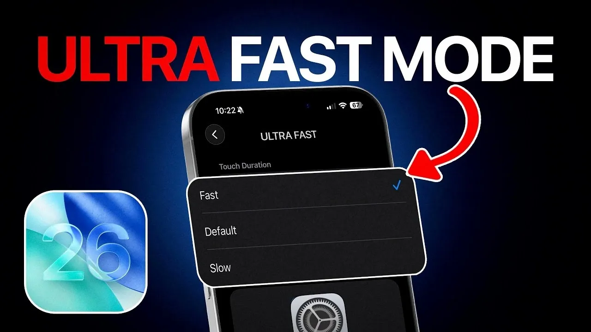

Boost Your iPhone’s Performance With Ultra Fast Mode in iOS 26


As technology advances, our expectations for smartphone performance continue to rise. We want our devices to be faster, more efficient, and more responsive. With the release of iOS 26, Apple has introduced a range of features designed to boost your iPhone's performance, including the highly anticipated Ultra Fast Mode. In this article, we'll explore the various settings and features that can help you unlock your iPhone's full potential and enjoy a seamless user experience.
📋 Table of Contents
Introduction to iOS 26 Ultra Fast Mode
iOS 26 Ultra Fast Mode is a new feature that allows you to prioritize performance and speed on your iPhone. By enabling this mode, you can enjoy faster app launching, smoother animations, and improved overall responsiveness. To activate Ultra Fast Mode, go to Settings > Performance > Ultra Fast Mode. We recommend trying out this feature to see the difference it can make in your daily iPhone use.
Optimizing Performance with iOS 26 Settings
In addition to Ultra Fast Mode, iOS 26 offers a range of settings that can help optimize your iPhone's performance. These include Tap or Swipe to Wake, Alternate Face ID setup, and swipe navigation bar between apps. By enabling these features, you can enjoy faster and more convenient navigation on your iPhone. The following table summarizes some of the key performance-boosting settings in iOS 26:
| Setting | Description |
|---|---|
| Tap or Swipe to Wake | Wake up your iPhone with a simple tap or swipe gesture |
| Alternate Face ID setup | Set up an alternate Face ID to unlock your iPhone faster |
| Swipe navigation bar between apps | Switch between apps quickly with a swipe gesture |
RECOMMENDED FOR YOU
Check out more tech articles here →As we explore the various settings and features in iOS 26, it's essential to remember that optimization is key to a faster iPhone experience. By tweaking these settings to suit your needs, you can enjoy a more responsive and efficient device.
Navigating Your iPhone with Gestures and Haptic Feedback
iOS 26 introduces a range of new gesture-based navigation features, including the ability to swipe between apps and access the Control Center with a simple swipe. Additionally, the Haptic Touch speed fast option allows you to customize the speed of your Haptic Touch interactions. We recommend experimenting with these features to find the navigation style that works best for you.
Tip: To access the camera quickly, use the instant camera launch feature from the lock screen. Simply swipe left from the lock screen to launch the camera app and start taking photos or videos immediately.
In addition to gesture-based navigation, iOS 26 also offers improved haptic feedback optimization. This feature allows you to customize the haptic feedback settings to suit your preferences, ensuring a more immersive and engaging user experience.
Additional Tips for a Faster iPhone Experience
To further boost your iPhone's performance, we recommend exploring the following tips and tricks:
- Use the Control Center camera shortcut to access the camera app quickly
- Enable the faster iPhone tips feature to receive personalized performance optimization suggestions
- Unlock your iPhone faster with the Alternate Face ID setup feature
- Explore the app navigation gestures to find the most efficient way to navigate your iPhone
By following these tips and optimizing your iPhone's settings, you can enjoy a faster, more efficient, and more enjoyable user experience. Whether you're a power user or just looking to get the most out of your iPhone, iOS 26 has something to offer.
Conclusion
In conclusion, iOS 26 offers a range of features and settings designed to boost your iPhone's performance and optimize your user experience. From Ultra Fast Mode to gesture-based navigation and haptic feedback optimization, there are many ways to customize and enhance your iPhone's performance. We hope this article has provided you with a comprehensive guide to unlocking your iPhone's full potential and enjoying a faster, more seamless experience.
Ultimate Schooling Editorial Team
Expert tech education content delivered daily.
Leave a Comment